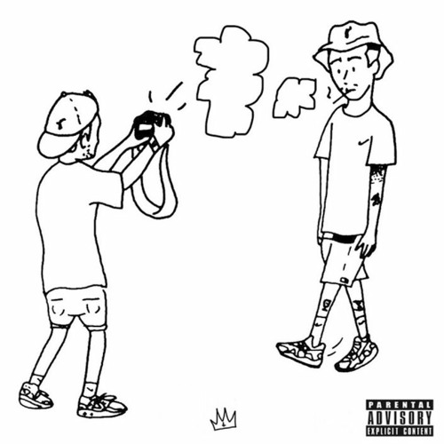
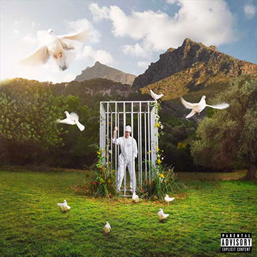
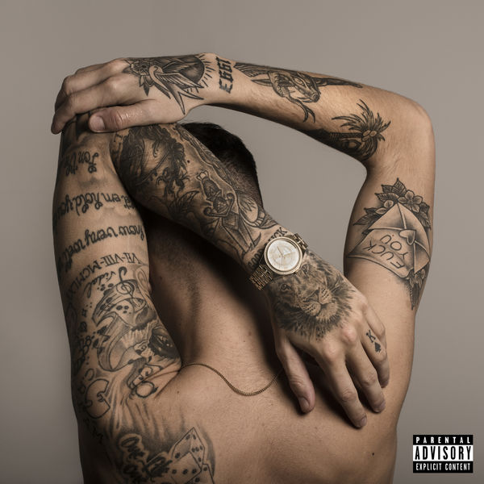

Sobre Rels B
Daniel Heredia Vidal, más conocido por su nombre artístico Rels B, es un cantante, compositor y productor musical español de rhythm and blues, dancehall, pop latino, hip hop y reguetón. Con nueve producciones musicales publicadas, es considerado como uno de los mayores exponentes de música urbana de España.
Mejores albums |
|||||||||
| Player Hater |  | ||||||||
| Happy Birthday Flakko |  |
||||||||
| LA ISLA LP |  | ||||||||
| Flakk Daniel's LP |  | ||||||||
| A new star (1993) | |||||||||